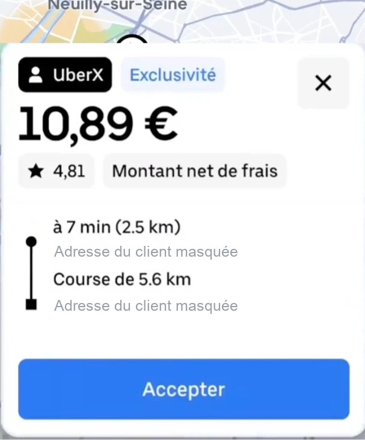
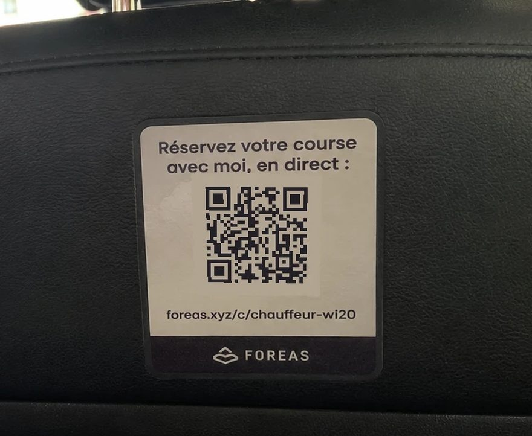
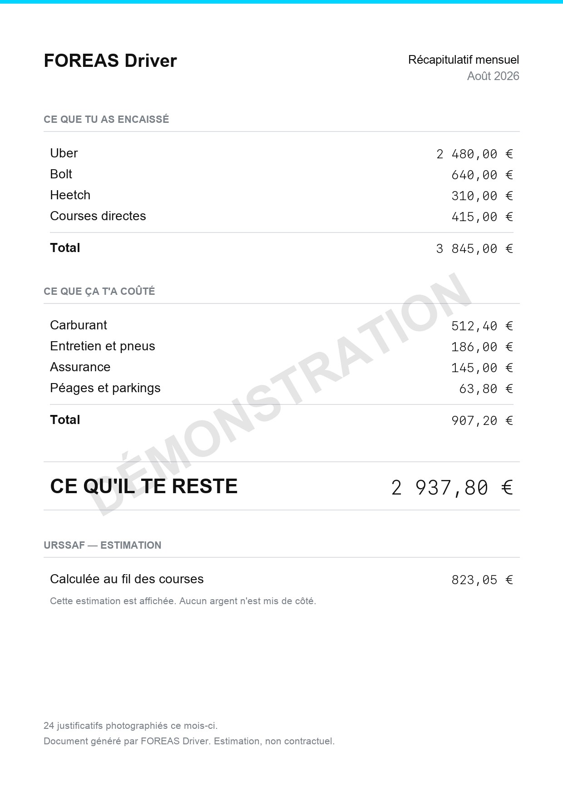

Le verdict
Ce qui se passe vraiment
Une course arrive. Tu as quelques secondes. Le montant est écrit, les minutes aussi. Ce que personne ne calcule : ce qu’il te reste de l’heure.

Ce que l’écran dit10,89 €
Ce qu’il ne dit pasce qu’il te reste de l’heure
Capture d’une vraie proposition. Les adresses du client sont masquées.
Le calcul
75 min estimées jusqu’à CDG. Le montant ne paie pas le temps pris.
Démonstration · local · 82 min · net 26,30 € · seuil 24 €/h
On ne devine pas ta commission.
On compte ton temps et tes kilomètres.
La preuve
Dix propositions réelles. Cinq que FOREAS te dit de prendre, cinq qu’il te dit de laisser. Le calcul est écrit dans l’image.
Fais glisser · touche pour lancer
Démonstration. Chaque image porte son calcul et son seuil.
Sur ton téléphone
Une journée
●●●○●●●●○●●○
Exemple construit. Ce ne sont pas les chiffres d’un chauffeur.
Ta vitrine
Il rouvre l’appli. Il tombe sur quelqu’un d’autre.
Ce qui change
Il descend rue de Rivoli. Il scanne l’autocollant collé au dos de ton siège. Jeudi, il te reprend directement.
L’autocollant

Commandé depuis l’app, livré chez toi.
Objet réel. Photo prise dans une voiture en service.
Ouvre-la maintenant
foreas.xyz/c/chauffeur-wi20
Ouvrir la page dans un autre ongletPage en ligne. Adresse vérifiée le 4 septembre 2026.
Ce qu’elle ne fait pas
Elle garde ceux que tu as déjà. La réservation arrive chez toi, pas chez une plateforme. Personne ne te promet du volume.
Un cas simple
Il te reprend le lundi.
Quatre courses par mois.
Aucune ne passe par une plateforme.
Exemple. Aucun montant n’est avancé.
Le carnet
Le dimanche soir
Trois mois de tickets dans un sac sous le siège. Un dimanche entier à trier. Et la question qui revient : combien je vais devoir.
Trois gestes
Le montant et la date se lisent.
Ça bouge au fil des courses, pas en fin de mois.
Un fichier, un envoi, c’est fini.
Les chiffres viennent de ce que tu enregistres. Rien n’est deviné.
L’URSSAF
Simulation. Taux publics.
Un mois

Ouvrir le document en entierLa barre
Tu poses ton chiffre le matin. Elle monte course après course.
Elle bouge avec tes vraies courses, jamais avec une saisie à la main.
Demande-lui ton objectifLa vague
Quatre niveaux de demande. Un doigt sur la zone, Waze démarre.
Chaque course d’un chauffeur nourrit la carte de tous les autres. Dès le premier qui roule, ça s’alimente.
Estimation. Aucune course promise.
Demande-lui ta zoneLe fil
Un contrôle, un accident, un bouchon. Avec le lieu et la distance.
Tu passes tout près, ou droit devant sur ta route : on te demande si ça tient encore.
Demande-lui le filAjnaya
Tu lui écris comme à un collègue. Elle répond.
Elle connaît l’app par cœur — 24 fiches produit, en service depuis le 3 septembre 2026. Ta ville, c’est toi qui la connais.
Écris-lui maintenantLe guetteur
Uber, Bolt, Heetch changent leurs règles de tarif. Tu es prévenu.
Trois plateformes, nommées. On ne promet aucun délai : on te le dit quand on le sait.
Demande-lui ce qui a changéTon seuil
Deux minutes, assis dans la voiture, moteur coupé.
Ton seuil en euros par heure entre directement dans le calcul du verdict. Change-le, les verdicts changent avec.
Demande-lui comment le réglerY aller
Portière claquée, un tap, tu roules.
Waze, Google Maps ou Plans — ceux que tu as déjà.
Demande-luiTa série
Le compte des jours où tu as tenu ton objectif.
Gardé sur ton téléphone, nulle part ailleurs. Si tu coupes, personne ne t’écrit.
Onze est un exemple.
Demande-luiLe collègue
Il paie au mois : 5 € par mois. Il prend l’année : 50 €, une seule fois.
Ton filleul direct uniquement — rien sur les filleuls de tes filleuls. Six fois 5 €, ça fait 30 €. L’abonnement en coûte 29,99.
Tant qu’ils paient.
Demande-lui ton lienSans promesse cachée
Tu tapes deux fois au dos du téléphone. Apple ne laisse pas le choix.
On te donne la vitrine. Les clients, c’est ton métier.
L’URSSAF est simulée, jamais mise de côté.
Tu acceptes ou tu refuses toi-même chaque course.
Si tu testes
109,89 € de moins que douze mois au mois.
0 € prélevé. Ta carte est enregistrée.
29,99 € prélevés, sauf si tu coupes avant.
Carte enregistrée dès l’inscription. Résiliation en un clic.
Questions simples
Oui, mais pas tout seul. Tu tapes deux fois au dos du téléphone devant la proposition. Apple ne laisse pas le choix.
FOREAS lit ce que tu lui montres, sur ton téléphone. Tes chiffres restent chez toi.
En un clic, depuis l’app, avant la fin des trois jours. Tu n’es pas débité.
Non. Tu peux lire le verdict et sa raison sans jamais lui écrire.
C’est la même adresse sur Android et sur iPhone.
Installe FOREAS DriverFOREAS
Vois « à prendre » ou « à laisser », lis la raison, puis décide.
Parle à Ajnaya